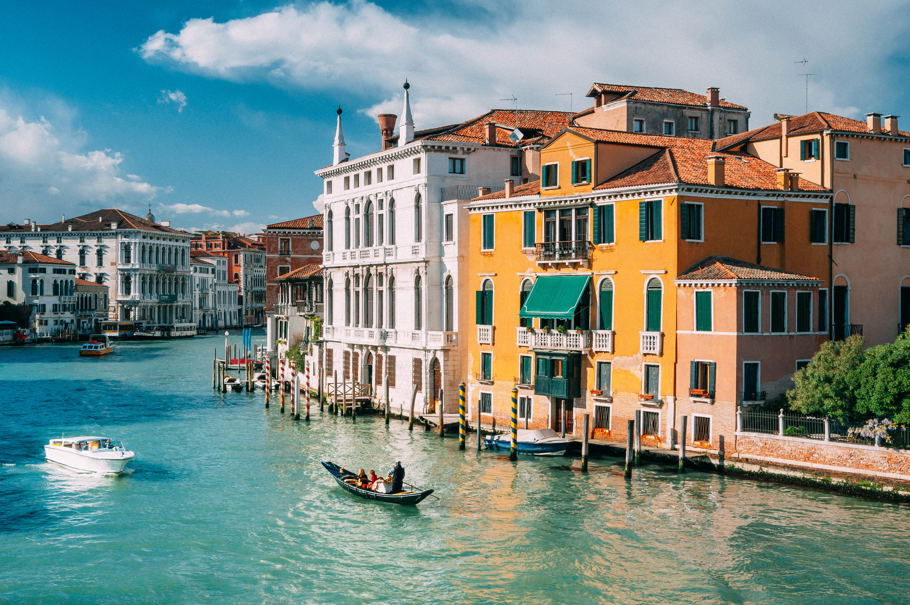

Venice

The city is virtually the same as it was six hundred years ago, which adds to the fascinating character. Venice has decayed since its heyday and is heavily touristed (there are 56000 residents and 20 million tourists per year.
Climate
The worst times to visit may be during the carnival and when it's raining; Venice can get very dark and rainy. Depending on when you visit, you might even have to buy waterproof shoes, which are sold on the streets for around €20. When it's raining there are mosquitoes and occasional infestations of flies. Spring and fall are probably best, a compromise between temperature (expect 5-15°C in March) and the tourist load. Between November and January, you may manage to feel you have Venice all to yourself, an interesting and quiet experience. Beware of the weather during the winter months: it can be quite cold, windy, and damp. Fog is an additional hazard if you are driving in or out, doubly so in the unlikely chance that you will pilot a boat. That said, if you've never been to Venice, it's better to go in summer than not to go. You won't regret it. Many cities are far worse in summer, and Venice has no cars, hence no smog.
History and Literature
Since Medieval Times, Venice has frequently served as a source of inspiration to a wide variety of authors, poets and dramatists. It has also long been a major print center, having been home to some of the earliest Italian printing presses. The deep and diverse literary tradition at Venice is too extensive to cover comprehensively in short space, but we can get an overview of some of the most notable works associated with the city throughout history: The Travels of Marco Polo is a classic piece of Western Literature that holds an important place historically since the reports of Marco Polo's voyage to the distant, little-known East became a major inspiration to later European exploration of the world. Polo was a Venetian merchant who surveys lands he passed through from the Near East all the way to Cathay (China). Story of My Life, by Giacomo Casanova, is an 18th Century work by another Venetian merchant-traveler. His autobiography chronicles many adventures that center around Venice, but it is also an important source of information on social customs of the time. Ruzante, who real name was Angelo Beolco, was a 16th-Century Venetian playwright who is famous for his vivid, if sometimes coarse, plays about country life in the vicinity of his native Padua.
Get in By Plane
The closest commercial airport is Marco Polo Airport (IATA: VCE), on the mainland near Mestre (technically part of the city of Venice but on the mainland and without Venice's unique structure). Note: Marco Polo is currently (2018) undergoing major renovations and upgrading. Layouts, routings and availalbe facilities might change quickly. Tip: VCE is usually approached from the south, giving you a nice view of Venice from the right hand window seats. You have a number of travel options from here: ATVO Venezia Express: direct non-stop to Piazzale Roma is a coach-type bus with seperate luggage compartment and guaranteed seating (10-15 Minutes). As of April 2018, the ticket costs €8 one way, €15 return. From Piazzale Roma, it is possible to catch the vaporreto to other water stops in Venice, see getting around section. local bus ACTV line 5: all local stops to Piazzale Roma with mixed standing and seating space. As of April 2018, the ticket costs €8 one way, €15 return and the journey takes around 20-25 Minutes. It might be awkward with luggage, especially for groups. by rail (via bus): The airport is connected to the railway station of Mestre by bus, opposite the city and convenient for connections to Milan, Padova, Trieste, Verona and the rest of Italy); to the railway station of Venice Santa Lucia (5 minutes' walk from Piazzale Roma); and to the bus terminal of Piazzale Roma. Considering the time and effort for an extra transfer, taking a bus the whole way would usually be the better option.
Travelcard Time Prices 24 hours €20 36 hours €25 48 hours €30 72 hours €40 7 days €60 If you want to get around a bit more quickly, there are numerous vaporetti (water buses, sing.: vaporetto) serving the Canal Grande, the larger canals through Venice and the surrounding islands (Lido, La Guidecca, Murano, Burano, and so on). The vaporetti are generally the best way to get around for longer trips or for crossing the Canal Grande away from the bridges. Lines 1 and 2 go all the way along the Canal Grande and offer an easy sightseeing trip. Some routes may change by the season and depend on weather and tide conditions.